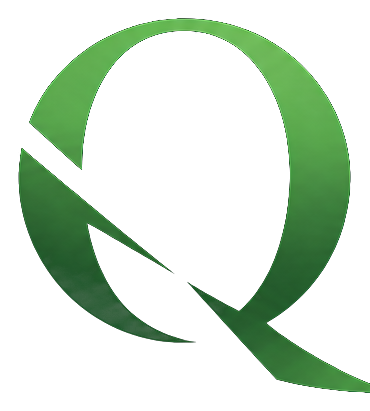

Arsip baca & analisis teks
Qurai
Tidak terlihat bukan karena gelap, tapi karena tidak mau melihat.
Qurai adalah ruang baca untuk mereka yang tidak puas berhenti di permukaan teks. Bukan tempat untuk menyerang, bukan pula tempat untuk membela, melainkan tempat untuk melihat dengan lebih teliti apa yang selama ini berada di zona antara.
Antara tafsir resmi dan pertanyaan yang tidak pernah dijawab. Antara keyakinan dan kenyataan. Antara yang diucapkan dan yang tidak.
Di sini tersedia dua jalan masuk: arsip cepat untuk membaca ayat demi ayat secara kritis, dan esai mendalam yang menelusuri satu surat secara utuh.

urai
Quran sebagai objek kajian, urai sebagai cara kerja: membongkar benang yang kusut, mengikuti lapisan historis, linguistik, dan logisnya sampai pertanyaan menjadi lebih terang.
Tidak terlihat bukan karena gelap,
tapi karena tidak mau melihat.
Ada zona dalam teks yang selama ini luput dari sorotan. Tidak masuk dalam khotbah Jumat, tidak muncul dalam tafsir populer, tidak diajukan dalam pengajian. Qurai adalah undangan untuk berdiri di zona itu cukup lama agar mata dan nalar sama-sama bekerja.